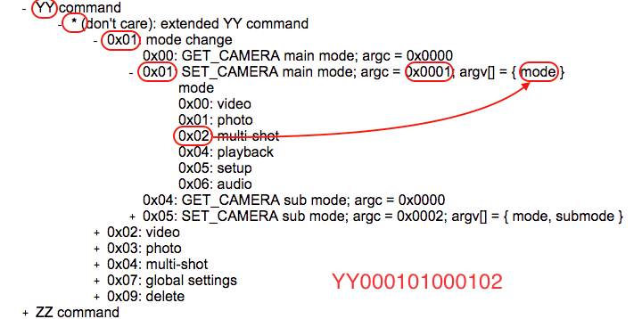

List of GoPro Hero 4 I2C Commands
The following tree represents all the I2C commands of GoPro Hero 4 camera. Actual I2C packets that the camera understands are in a binary form and further wrapped by packet size, useless constant header bytes, session numbers, etc. So we don't want to go into gory detail of the binary array but we explain human-readable strings that both MewPro Iliad and MewPro4 softwares also understand.
Command Tree
Click '+' to expand a branch and '-' to shrink.
- YY command
- * (don't care): extended YY command
- 0x01: mode change
- 0x00: GET_CAMERA main mode; argc = 0x0000
- 0x01: SET_CAMERA main mode; argc = 0x0001; argv[] = { mode }
- mode
- 0x00: video
- 0x01: photo
- 0x02: multi-shot
- 0x04: playback
- 0x05: setup
- 0x06: audio
- 0x04: GET_CAMERA sub mode; argc = 0x0000
- 0x05: SET_CAMERA sub mode; argc = 0x0002; argv[] = { mode, submode }
- mode, submode
-
- 0x00, 0x00: video
- 0x00, 0x01: timelapse video
- 0x00, 0x02: photo in video
- 0x00, 0x03: looping video
- 0x01, 0x00: single photo
- 0x01, 0x01: continuous photo
- 0x01, 0x02: night photo
- 0x02, 0x00: burst photo
- 0x02, 0x01: timelapse photo
- 0x02, 0x02: nightlapse photo
- 0x02: video
- 0x03: photo
- 0x04: multi-shot
- 0x07: global settings
- 0x09: delete
- ZZ command
Usage
The commands listed above are translated into I2C binary arrays for Hero 4 camera by MewPro Iliad or MewPro4 softwares. Both Iliad and MewPro can receive these strings through their default UART port (aka Serial in Arduino's terminology) at 57600 baud. A command consists of hexadecimal characters preceded by either YY or ZZ and followed by a newline character \n. These commands can be sent from your PC's terminal or Arduino Monitor easily.
Each node of the tree corresponds a command byte that is denoted by using two hexadecimal digits (0-9 and/or A-F).
Example 1: Changing camera mode to multi-shot = "YY000101000102\n".
This command string is obtained by clicking
- "YY command" →
- "* (don't care): extended YY command" →
- "0x01: mode change" →
- "0x01: SET_CAMERA main mode; argc = 0x0001; argv[] = { mode }" where mode=0x02 (multi-shot).
These branch expansions respectively correspond to the following nodes (see also Fig 1).
- "YY" →
- "00" (This is a don't-care byte. Let it be 00 for simplicity.) →
- "01" →
- "01" "0001" "02". (The last node may contain arguments to the command:
argc followed by argv's.)

Fig 1.
Example 2: Start recording in video mode = "YY00021B0000\n".
This command string is obtained by clicking
- "YY command" →
- "* (don't care): extended YY command" →
- "0x02: video" →
- "0x1B: shutter button depressed. start recording; argc = 0x0000".
These branch expansions respectively correspond to the following nodes
- "YY" →
- "00" (don't care) →
- "02" →
- "1B" "0000". (There are zero arguments to the command but argument length.)
Example 3: Change video mode to 4K 30fps Wide = "YY0002030003010800\n".
This command string is obtained by clicking
- "YY command" →
- "* (don't care): extended YY command" →
- "0x02: video" →
- "0x03: SET_CAMERA video mode; argc = 0x0003; argv[] = { resolution, fps, fov }"
where resolution=0x01, fps=0x08, and fov=0x00.
These branch expansions respectively correspond to the following nodes
- "YY" →
- "00" (don't care) →
- "02" →
- "03" "0003" "01" "08" "00". (There are three arguments to the command.)
Example 4: Power off camera = "ZZ00030101\n".
This command string is obtained by clicking
- "ZZ command" →
- "0x00: extended ZZ command" →
- "0x03: power off; argc = 0x01; argv[] = { 0x01 }".
These branch expansions respectively correspond to the following nodes
- "ZZ" →
- "00" →
- "03" "01" "01". (There is one argument to the command.)
Note
In order to improve readability the following strings, for example, share the same meaning for MewPro Iliad and/or MewPro4 softwares.
- ZZ00030101\n
- ZZ 00 03 01 01\n (inserting arbitrary spaces at 8-bit boundary)
- ZZ0 3 1 1\n (omitting upper nibble 0)
Useful Links
- MewPro Iliad: Shop, Usage, GitHub repo
- MewPro 2: Shop, Usage, GitHub repo
Orangkucing Lab © 2017. All Rights Reserved.
MewPro is a trademark registered in the Japan Patent Office.